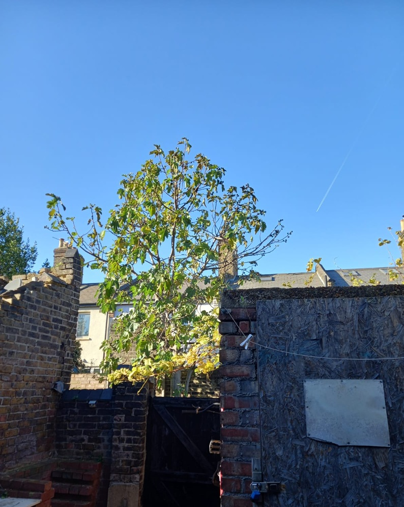
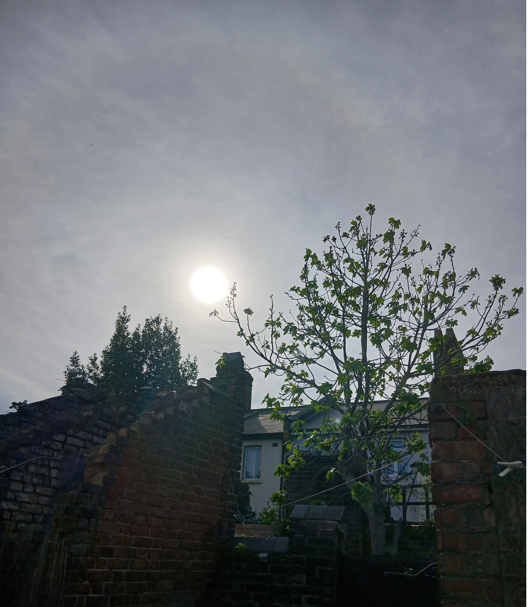
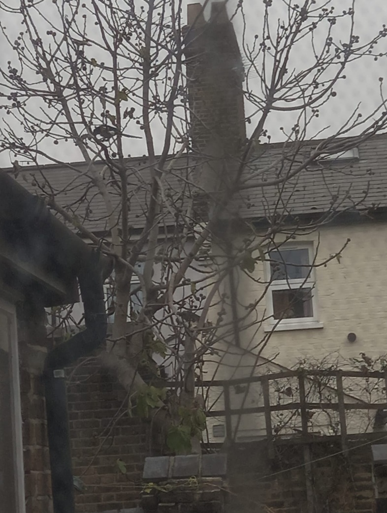

Tree before winter — leaves, bird nests, feeding behaviour.


Magpie on the fig tree — feeding on ripe figs.
Birds That Visit
The point here is that i tend to memorize everything and look for standards.
Magpie — comes mostly on rainy days, eats figs.
Blue tits — come for insects on branches.
European goldfinch — small flock bird with yellow patches; eats seeds and small insects.
airplanes — I can do something similar for the plane tracks. I memorized it(altitude,destination, which aircrafts goes to which airport in london ,etc) by watching it and by the noise as well.